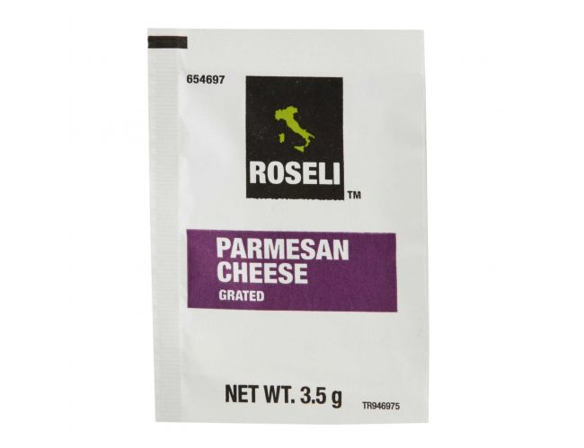

ThreeCents Coding
Hey! Welcome to our "website" on the "internet"!
Who are we? We're ThreeCents: a little more than two cents but less than four. We like programming, and decided to share some of the good vibes. We've made Java tutorials and some games, and we'll publish some solutions to competitive programming questions too.
Here are the devs behind it!

Ritvik Teegavarapu is a high school sophomore. He only recently became very interested in computer science, after taking a full year Introduction to Java course. After finding his passion, he avidly worked to learn more about Java, as well as learning new languages along the way, such as Python and C++. He now focuses his time on competitive programming, specifically, the United States Computing Olympiad. He's in charge of that part of the site.
Ramsey Alsheikh is. He needs no restrictive human nouns. This creature got intrested in coding from around 7th grade with Python, and has since grew into Java, with C on the side. As of know, his current focus is discovering who "Joe" is. He handles the tutorials part of the site.

Justin Berke is a sophomore who has always been fascinated by computers, and has made it his goal to help share that fascination to others by creating simple, Java-based games to inspire the younger generation to start coding. Justin had first encountered Java during his freshman year in an Introduction to Java course, and instantly fell in love with programming. From that moment forward, he has been working on improving his skills in Java, and has partnered up with ThreeCents in 2018 to help inspire.
EMOTIONAL CONNECTION ESTABLISHED